Image Sorter
Visualizzatore e smistatore di immagini, video e PDF per Linux. Naviga rapidamente le tue foto e smistale in cartelle di destinazione con un tasto solo — da tastiera, mouse o Stream Deck fisico.
Installazione // download e primo avvio
Image Sorter è un'applicazione Python per Linux. Il codice sorgente e le versioni pubblicate del progetto sono disponibili su GitHub con licenza Creative Common.
Codice sorgente
Il progetto è ospitato su GitHub. È possibile scaricare il repository completo oppure utilizzare il comando Git per ottenere una copia locale aggiornata.
Ambiente Python
Per l'esecuzione è necessario un ambiente Python compatibile con la versione del programma e con le librerie indicate nel progetto.
Due modi equivalenti per procurarsi il codice — sono alternativi tra loro, non passaggi in sequenza: bastano il punto 1a OPPURE il punto 1b, non entrambi. Da lì in poi (punto 2 e seguenti) la procedura è identica per tutti e due.
1a. Download ZIP, senza Git // più semplice, nessun requisito
Il repository ufficiale di Image Sorter è disponibile all'indirizzo:
Dalla pagina GitHub è possibile scegliere Code → Download ZIP per scaricare una copia del progetto senza utilizzare Git.
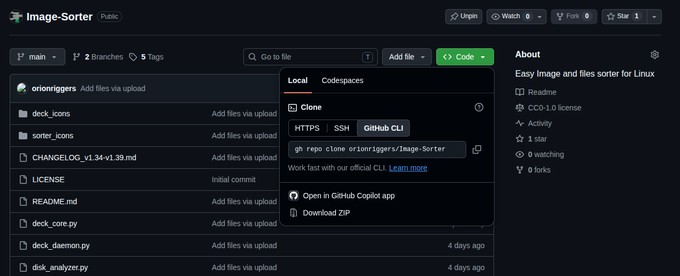
Download ZIP">
Il download produce un file Image-Sorter-main.zip: va
estratto prima di poter usare il programma (tasto destro sul file →
"Estrai qui" nella maggior parte dei file manager). L'estrazione crea
una cartella chiamata Image-Sorter-main — un nome diverso
da quello del repository, perché GitHub aggiunge sempre il nome del
ramo (main) al nome della cartella per gli archivi
scaricati così, non clonati con Git.
1b. Clonare con Git, alternativa a 1a // consigliato se prevedi aggiornamenti frequenti
Se Git è installato sul computer, il repository può essere clonato direttamente nel terminale — alternativa al download ZIP del punto 1a qui sopra, non un passaggio aggiuntivo dopo di esso.
git clone https://github.com/orionriggers/Image-Sorter.git
Dopo il download, entrare nella cartella del progetto:
cd Image-Sorter
Il metodo Git è particolarmente utile se il programma viene aggiornato frequentemente, perché permette in seguito di recuperare le modifiche pubblicate nel repository.
2. Preparare Python // ambiente di esecuzione
Serve Python 3.8 o successivo (già presente di serie sulla maggior
parte delle distribuzioni Linux recenti) e alcune librerie. Il modo
più semplice, dentro la cartella del progetto (quella con dentro
image_sorter.py), è lo script di installazione incluso:
bash installa.sh
Riconosce automaticamente la distribuzione (apt su Debian/Ubuntu/Mint, dnf su Fedora, pacman su Arch, zypper su openSUSE) e installa tutto il necessario: i pacchetti di sistema (tkinter, il supporto immagini di Pillow, ffmpeg per l'anteprima video, poppler per i PDF, hidapi per lo Stream Deck, xclip per il copia/incolla file), le librerie Python via pip, l'icona, la voce nel menu applicazioni e un collegamento sul Desktop (vedi il riquadro qui sotto), l'integrazione nel menu tasto destro del file manager (Nemo, Thunar, Dolphin) e — chiedendolo a video — il demone per tenere attivo lo Stream Deck fisico anche a programma chiuso. Può essere rilanciato in qualunque momento, anche dopo un aggiornamento, senza effetti collaterali.
bash installa.sh crea da solo tutto il necessario per
avviare Image Sorter come un programma qualunque, senza terminale:
un'icona cliccabile sul Desktop (o "Scrivania", se la cartella si
chiama così nella lingua del sistema), e una voce nel menu
applicazioni del desktop environment, cercabile per nome come le
altre app installate. Se il file manager chiede la prima volta se
"fidarsi" dell'icona sul Desktop prima di eseguirla, è normale (alcuni
desktop environment lo richiedono per qualunque collegamento nuovo,
non solo per Image Sorter) — succede al massimo una volta.
Chi ha scelto l'installazione manuale delle librerie qui sotto non ottiene icona né voce nel menu: per averle comunque, senza reinstallare nulla, basta lanciare
bash installa.sh in un secondo momento — le librerie già
presenti vengono riconosciute e saltate, si occupa solo di icona,
menu e collegamento.
Installazione manuale delle librerie // alternativa a installa.sh
Se si preferisce non eseguire lo script (o si è su una distribuzione non coperta), le librerie Python si installano con pip. L'unica obbligatoria è Pillow — senza, il programma non parte proprio; tutte le altre sono opzionali e disattivano solo la singola funzione collegata se mancanti, il resto continua a funzionare.
pip install Pillow --user
| Libreria | Abilita |
|---|---|
send2trash | Cestino di sistema (integrazione col cestino del desktop) |
pymupdf | Supporto PDF |
streamdeck | Stream Deck Elgato fisico |
piexif | Editor EXIF |
reverse-geocode | Geocoding GPS offline (nomi dei luoghi in Timeline) |
folium | Mappa GPS interattiva |
tkinterdnd2 | Drag & drop di cartelle sul tastierino/Deck |
pillow-heif | Apertura file HEIC/HEIF (foto iPhone) |
pillow-avif-plugin | Apertura file AVIF — non installata da installa.sh, va aggiunta a mano anche scegliendo lo script |
pip install Pillow send2trash pymupdf streamdeck piexif reverse-geocode folium tkinterdnd2 pillow-heif pillow-avif-plugin --user
3. Avviare Image Sorter // primo avvio
Una volta scaricato il progetto e predisposto l'ambiente Python, il programma può essere avviato dal terminale eseguendo lo script principale previsto dal progetto.
python3 image_sorter.py
Passandogli un percorso, si avvia aprendo direttamente quel file o,
con l'opzione --browser, quella cartella nel Browser
cartelle (Naviga) invece che nel visualizzatore:
python3 image_sorter.py /percorso/immagine.jpgpython3 image_sorter.py --browser /percorso/cartella
4. Aggiornare il programma // solo per chi ha scelto 1b
Se il progetto è stato installato tramite git clone (punto 1b), gli aggiornamenti possono essere recuperati dal repository con:
git pull
Prima di aggiornare è consigliabile chiudere Image Sorter e, se sono state apportate modifiche locali ai file del progetto, verificare lo stato del repository per evitare conflitti.
Chi ha scaricato lo ZIP (punto 1a) non ha un repository locale da cui recuperare gli aggiornamenti: per aggiornare basta scaricare di nuovo lo ZIP dalla stessa pagina GitHub ed estrarlo, sostituendo la cartella precedente (oppure estraendolo altrove e rilanciando installa.sh dalla nuova cartella).
Download ZIP
Metodo semplice per ottenere una copia del progetto senza configurare Git.
Git clone
Metodo più adatto a chi desidera mantenere il progetto aggiornabile.
Visualizzatore // finestra principale
La schermata che si apre all'avvio: mostra un file alla volta (immagine, video o pagina PDF) con la barra degli strumenti in alto e i preset di smistamento sulla destra.
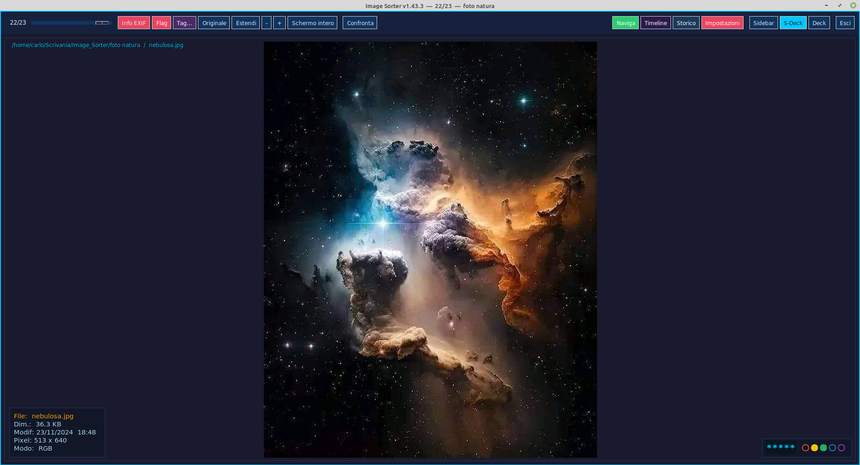
Navigazione
Frecce ← → per il file successivo/precedente, rotella del mouse, ↑ ↓ per le pagine di un PDF multipagina.
Zoom e adattamento
+ / - per zoomare, Z per adattare al canvas, X per la dimensione originale (1:1).
Modifiche
Rotazione non distruttiva, ridimensionamento e ritaglio interattivo con griglia dei terzi e blocco proporzioni, incluso il rapporto esatto dell'originale, sempre con annullamento Ctrl+Z e storico.
Smistamento con un tasto
Con SideBar o Deck aperti, anche i tasti 1-9 e 0 spostano il file nel preset attivo (visibile a destra), mentre Ctrl+1–9/0 lo copia invece di spostarlo.
Cestino con cronologia
Canc due volte (o Canc+Invio) per cestinare con conferma — sempre annullabile dallo Storico via cartella personalizzabile temporanea: mai una cancellazione diretta.
Overlay informativi
Tasto Info Exif I per i metadati EXIF (in basso a sinistra), Ctrl+F per valutazione e colorlabel (in basso a destra) — sovrapposti all'immagine, senza aprire altre finestre.
Modalità Confronta
Bottone "Confronta" (o tasto W): affianca all'immagine centrale due anteprime più piccole, precedente e successiva, che seguono la navigazione — solo visive, utili per un rapido prima/dopo. Vedi la sezione dedicata più sotto.
Tag testuali
Ogni file può avere tag liberi oltre a stelle e colori — finestra dedicata con Ctrl+T.
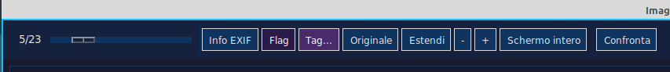
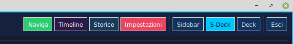
Sidebar apre la barra laterale, a rotazione accanto all'immagine, su finestra separata, o la chiude; S-Deck passa da funzioni operative a preset, se connesso fisicamente il Stream Deck, mentre Deck apre a rotazione una, due o n. preset su finestra flottante.
Operazioni principali // flusso di lavoro
Image Sorter è pensato per un flusso rapido: apri una cartella sorgente, valuta un file alla volta, scegli la destinazione e passa immediatamente al successivo.
① Aprire una sorgente
Premi O o usa Naviga per scegliere una cartella.
② Valutare
Visualizza immagini, video e PDF; usa zoom, adattamento e informazioni.
③ Confronto rapido
La funzione Confronta divide la schermata in 3 colonne, per una più rapida verifica della sequenza di immagini simili.
④ Smistare
1–9 e 0 spostano nel preset attivo.
Ctrl+numero effettua una copia nel preset attivo.
Continuare
Dopo lo smistamento il programma prosegue sul file successivo.
Apertura della sorgente // O
Il comando O apre il browser delle cartelle. Se il browser è già aperto, il comando lo porta in primo piano oppure lo chiude quando è già attivo. La selezione di una nuova sorgente ricostruisce l'elenco dei file e riparte dal primo elemento.
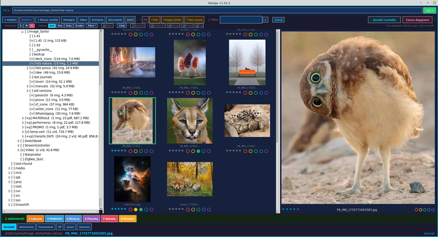
Smistamento rapido // numeri 1–9 e 0
I numeri corrispondono ai preset di destinazione. Premendo il numero il file viene spostato nella destinazione associata; con Ctrl+numero viene copiato lasciando intatto l'originale. La funzione richiede Sidebar o Deck attivi.
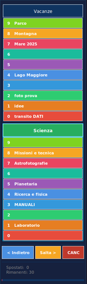
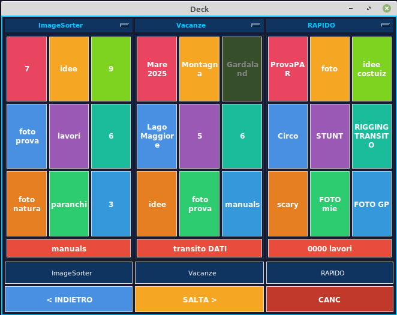
Annullare uno spostamento // Ctrl+←
Ctrl+← annulla l'ultimo spostamento e ripristina il file nella sorgente.
Cestino sicuro // doppio Canc
Con Canc due volte, oppure Canc + Invio, il file viene spostato in una cartella di transito e non eliminato direttamente. Rimane recuperabile tramite lo storico finché il transito non viene svuotato.
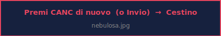
Con Ctrl + Canc, viene cancellata l'immagine precedente a quella appena visualizzata, senza richiesta di conferma; la funzione non è attiva per la prima immagine di una cartella.
Modifica del file // menu contestuale
Il menu contestuale dell'immagine raccoglie le operazioni di modifica, apertura e gestione del file corrente.
Ritaglia
Apre l'overlay interattivo di ritaglio.
Ridimensiona
Apre il pannello di gestione delle misure e proporzioni di ritaglio.
Rinomina
Modifica il nome del file direttamente nell'interfaccia.
Ruota
Ruota di 90° in senso orario o antiorario e salva l'immagine.
Modifica con..
Permette di scegliere il programma di modifica predefinito, che da quel momento viene memorizzato.
Rating e ColorFlag
Immediata visualizzazione e modifica di una valutazione o di un'etichetta colorata.
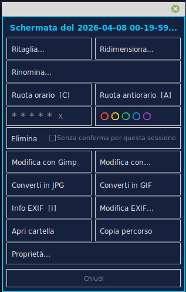
Ritaglio interattivo // Crop Overlay
Il ritaglio avviene direttamente sull'immagine tramite una selezione interattiva. L'area viene mantenuta entro i limiti dell'originale e una selezione troppo piccola viene rifiutata.
Quando il crop sovrascrive l'originale viene creato un backup per consentire il recupero; se si salva con un nuovo nome l'originale resta intatto.
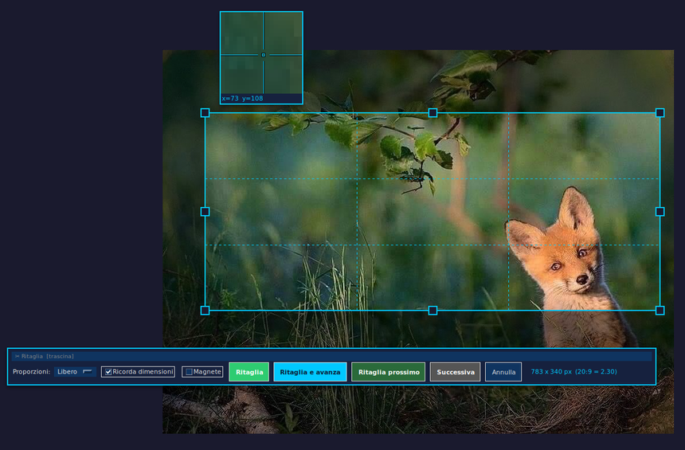
Proporzioni
Gestione delle proporzioni tra altezza e larghezza dell'immagine, libere o con valori preimpostati.
Ricorda dimensioni
Mantenimento delle dimensioni della zona di taglio tra una sessione e l'altra.
Magnete
Aggancio automatico della linea di ritaglio.
Ritaglia
Per sovrascrivere o per rinominare il file, con finestra di conferma.
Ritaglia e avanza
Non viene richiesta conferma e si passa all'immagine successiva chiudendo la finestra di ritaglio.
Ritaglia prossimo
Non viene richiesta conferma e si passa all'immagine successiva con le stesse impostazioni di ritaglio attive.
Timeline // vista cronologica + mappa GPS
Scansiona ricorsivamente una o più cartelle e organizza i file per data, con filtri per anno, luogo, cartella, valutazione e colore. Si apre con T.
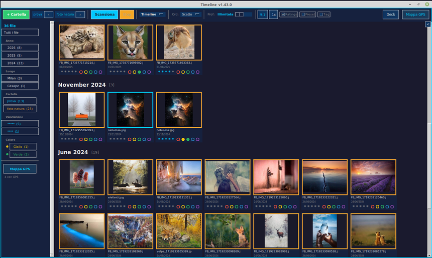
Scansione ricorsiva
Aggiungi una o più cartelle sorgente e premi "Scansiona" — profondità di ricerca configurabile, illimitata di default.
Mappa GPS
Apre una mappa interattiva con tutti i file che hanno coordinate GPS nell'EXIF, per rivedere un viaggio per luogo invece che per data.
Filtri nella barra laterale
Per anno, cartella, valutazione e colore — con conteggi live per ciascuna voce, click per filtrare la vista.
Due dimensioni miniatura
1x / 2x — a differenza di Naviga, qui c'è più spazio orizzontale disponibile, quindi stelle e pallini sono proporzionalmente più grandi.
Preset, Rating e Tag
Come in Naviga, con i rispettivi checkbox si possono visualizzare in fondo alla finestra la riga con i preset di destinazione e una con i tag esistenti, per applicarli alla selezione corrente.
Pannello anteprima
Con l'anteprima ingrandita aperta sulla destra, sotto l'immagine compare una riga con stelle, nome del file e ColorLabel — come in Naviga, si aggiorna a ogni cambio di selezione.
Storico e recupero // operazioni sicure
Lo storico conserva le operazioni recenti e viene utilizzato per rendere recuperabili gli spostamenti e le operazioni verso il cestino di transito.
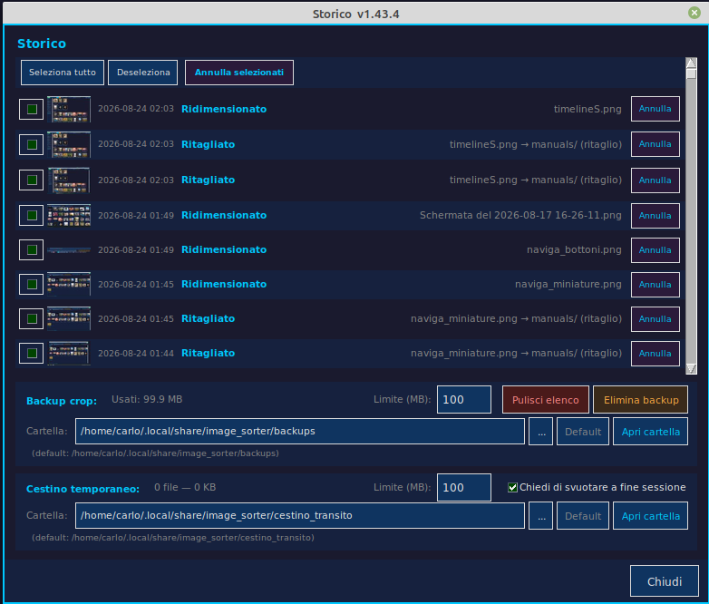
Impostazioni // sette schede
Il pannello di configurazione centrale, organizzato in sette schede lungo la parte alta della finestra. Si apre con R, e ricorda l'ultima scheda aperta.
Preset // elenco e gestione
Il cuore dell'applicazione è nell'elenco dei preset configurati: gruppi completi di dieci destinazioni, uno per ciascun tasto 0-9. Da qui si creano nuovi preset, con possibilità di copia, rinomina o elimina, e si sceglie quale sia quello primario attivo (segnato con *). In fondo, le opzioni di aspetto per il pannello Deck (numero di colonne) e per la Sidebar (preset assegnato, modalità fissa/finestra, aspetto griglia/elenco).
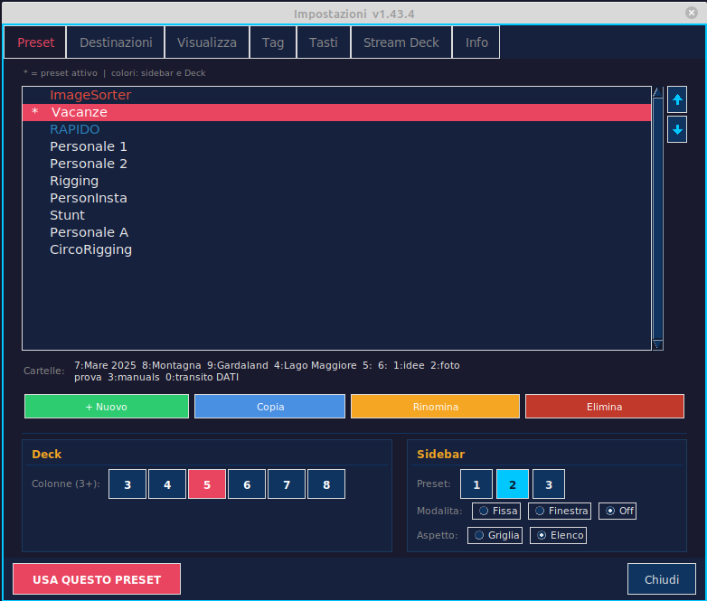
Destinazioni // cartelle per tasto
Qui si assegna una cartella e un'etichetta a ciascuno dei dieci tasti (0-9) del preset selezionato in alto. Per ogni tasto: un campo nome, un campo percorso (di sola lettura finché non si sceglie "percorso libero"), e un pulsante per sfogliare le cartelle del disco.
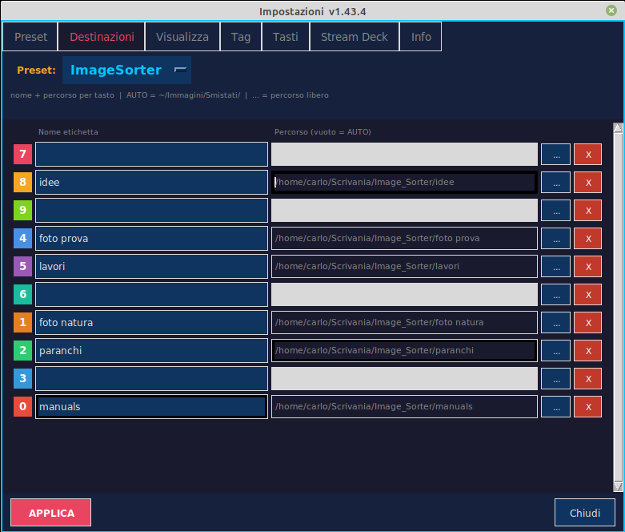
tkinterdnd2;
se non è installato, resta comunque disponibile il pulsante "Sfoglia".
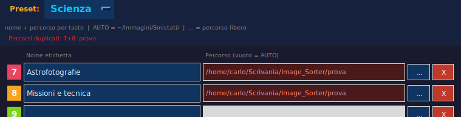
Visualizza // quali file mostrare
Interruttori ON/OFF per includere o escludere immagini,
video, PDF e file senza estensione (rilevati tramite magic bytes) dalla
navigazione. In fondo, un campo per aggiungere estensioni personalizzate
da includere (es. .heic, .arw, .cr2, .dng), separate da
virgola. Le modifiche si applicano al successivo caricamento cartella.
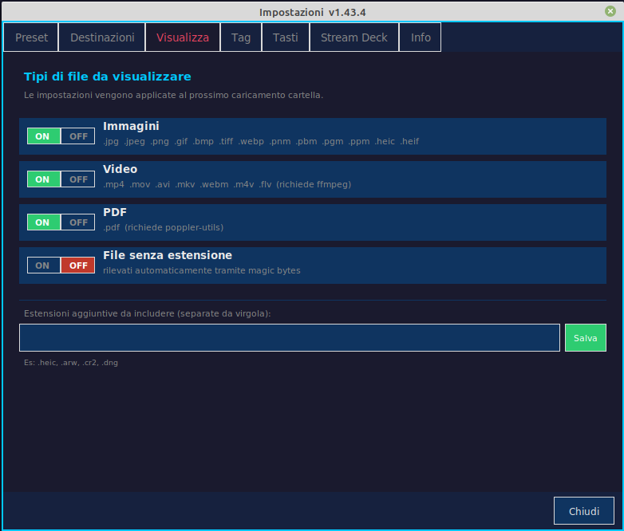
Tag // gestione tag e Gruppi Tag
Due colonne affiancate. A sinistra, la colonna Tag: crea, rinomina o elimina un tag dal registro della libreria — un tag può ora esistere anche prima di essere applicato a un file, non più solo "scoperto" usandolo. A destra, Gruppi Tag: crea, rinomina o elimina un gruppo, e una nuvola per aggiungere o togliere tag dall'appartenenza al gruppo selezionato — puramente organizzativi, usati come scorciatoia nel filtro di Naviga (un click aggiunge tutti i tag del gruppo al filtro). In fondo, la scelta preferita per visualizzare l'ordinamento della nuvola tag (alfabetico, uso recente, o frequenza).
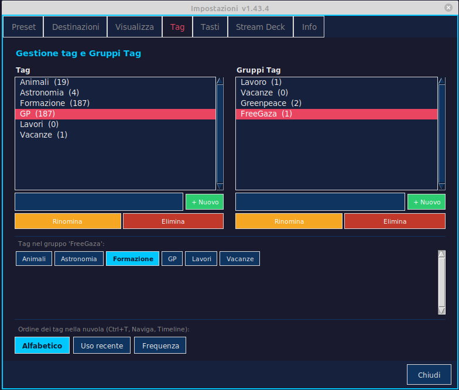
Tasti // riferimento scorciatoie
Un elenco scorrevole, in sola lettura, di tutte le scorciatoie da tastiera disponibili, raggruppate per categoria — la stessa tabella riportata in fondo a questo manuale, ma consultabile dentro il programma senza doverlo lasciare.
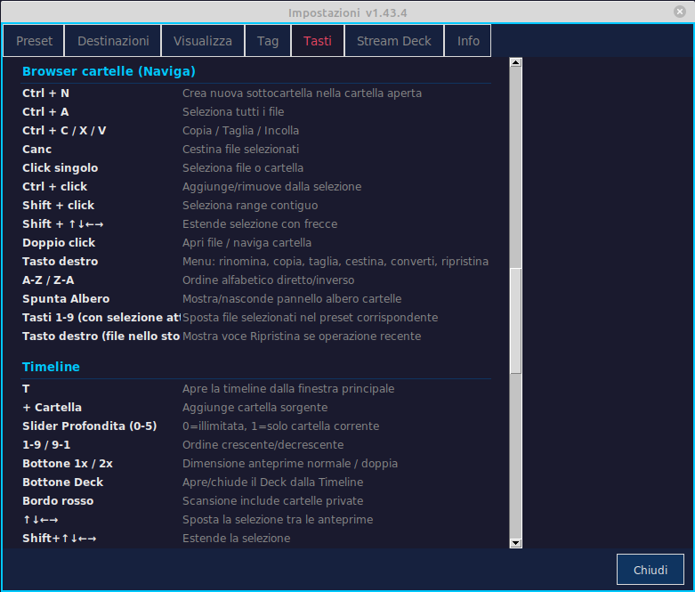
Stream Deck // dispositivo fisico
In cima alla scheda, un interruttore ON/OFF disattiva del tutto lo Stream Deck fisico — utile per usare un altro programma con lo stesso dispositivo: da disattivato, né il programma né il demone in autostart toccano più l'hardware. L'effetto è immediato, senza bisogno di riavviare.
Sotto, la configurazione del dispositivo, se collegato: stato di connessione, modello e numero di tasti rilevati, luminosità. La parte centrale gestisce le pagine della modalità idle — schede "Pag.1", "Pag.2" ecc. (si aggiungono col pulsante "+ Pag.", e spariscono da sole se restano vuote), una griglia che rispecchia la disposizione fisica dei tasti, e un editor per assegnare un'azione a ciascun tasto selezionato (apri cartella/app/URL, scorciatoia da tastiera, muto/smuto, testo, cambio pagina, uno dei comandi diretti).
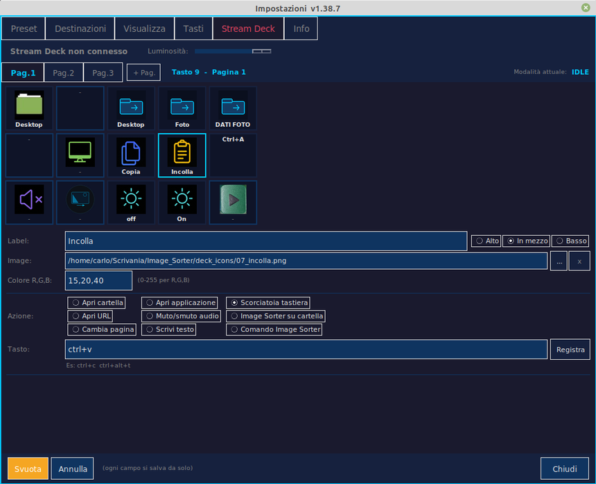
Info // lingua e informazioni
Selettore della lingua dell'interfaccia (riapre automaticamente le Impostazioni tradotte dopo il cambio), il logo del programma, e le informazioni di versione/licenza.
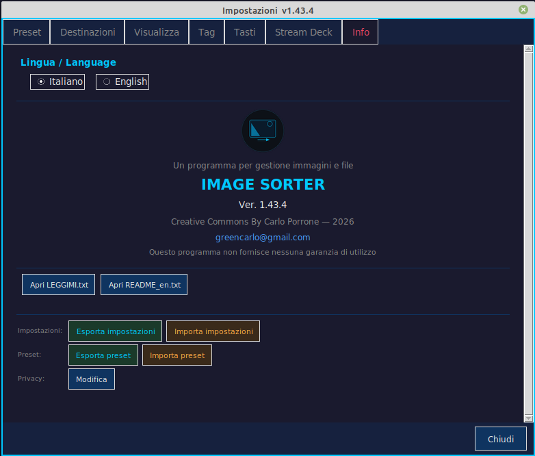
Le cartelle inserite nell'elenco "privacy" vengono segnalate bordate di rosso in Naviga e in Analisi cartelle, e ogni finestra con immagini provenienti da quelle cartelle viene bordata di rosso.
Finestra Deck // tastierino a schermo
Il nostro migliore strumento di gestione dei preset: un tastierino flottante, sempre in primo piano e ridimensionabile, che riproduce a schermo — cliccabile col mouse — la stessa griglia di smistamento della sidebar. Si apre con D o P, o dal pulsante "Deck" in barra. Utile su un secondo monitor, o quando si preferisce il mouse alla tastiera. Le destinazioni salvate ma non raggiungibili (disco o cartella assente) sono indicate dallo sfondo grigio.
Fino a 7 preset insieme
Ogni colonna mostra un preset diverso, scelto dal menu a tendina in cima: comodo per smistare verso più gruppi di destinazioni senza cambiare preset attivo di continuo.
Drag & drop cartelle
Come nella scheda Destinazioni, si può trascinare una cartella da un file manager esterno direttamente su un tasto per assegnarla come destinazione — immediato, senza passare da Impostazioni.
Bottoni touch
Questo pannello di controllo è ottimizzato per la rapida gestione e individuazione dei tasti destinazione, usare uno schermo touch è la soluzione migliore!
Valutazioni e ColorLabel
Ogni file — foto, video o PDF — può avere una valutazione da 0 a 5 stelle e una o più etichette colorate, non escludenti tra loro.
Visibili e modificabili ovunque abbia senso: sotto ogni miniatura in Naviga e Timeline, nel pannello anteprima ingrandita, dal menu tasto destro, e da un overlay dedicato sull'immagine principale (Ctrl+F). Ogni cambiamento si riflette subito ovunque, senza bisogno di ricaricare.
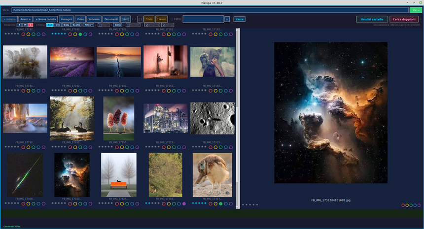
Tag // tag testuali liberi e Gruppi Tag
Oltre a Rating e ColorLabel, ogni file può avere quanti tag testuali liberi si vuole — parole chiave proprie, non un elenco predefinito.
Finestra Tag Ctrl+T
Nuvola di tag esistenti, filtrabile digitando; un tag nuovo si crea con Invio. Segue la navigazione del file corrente (frecce, pulsanti barra strumenti...) e funziona a interruttore: click per aggiungere o togliere il tag dal file mostrato.
Selezione multipla
Dal menu tasto destro, voce "Tag...": un tag è evidenziato solo se presente su TUTTI i file selezionati; il click applica o rimuove con lo stesso principio "tutti-o-nessuno" già usato per stelle e colori.
Riga cliccabile
Sotto la griglia, sia in Naviga che in Timeline: applica un tag alla selezione corrente senza aprire la finestra dedicata — checkbox "Tag" per nasconderla.
Gruppi Tag
Raggruppa tag correlati (scheda Impostazioni > Tag, vedi sopra) — per ora servono soprattutto come scorciatoia nel filtro di Naviga: un click aggiunge tutti i tag del gruppo in un colpo.
Modalità Confronta // precedente/successivo affiancati
Bottone "Confronta" nel visualizzatore, accanto a
"Schermo intero" (o tasto W): affianca al
canvas principale due anteprime più piccole — il file precedente a
sinistra, il successivo a destra — che seguono la navigazione da sole,
senza dover tornare indietro per un rapido prima/dopo.
Il tasto Canc elimina l'immagine centrale chiedendo conferma,
la combinazione Ctrl+Canc invece
cestina il file della colonna di sinistra, senza chiedere conferma.
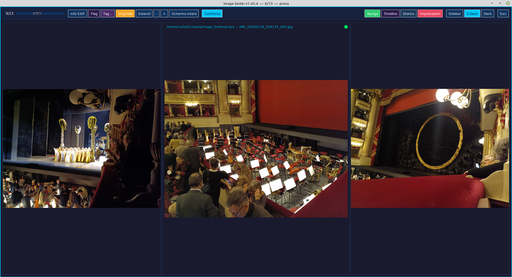
Stream Deck fisico // controllo hardware opzionale
Supporto per qualunque modello Elgato Stream Deck, in due modalità (configurabili dalla scheda "Stream Deck" di Impostazioni, vedi sopra).
Modalità preset
I tasti fisici rispecchiano il preset attivo del software: stessi numeri 0-9, stessi colori, smistamento diretto dal dispositivo.
Modalità idle
Pagine configurabili con azioni libere per tasto: apri cartella, applicazione, URL, scorciatoia da tastiera, muto/smuto, testo.
Oltre 30 comandi diretti
Ruota, elimina, zoom, invia a un editor esterno e altri — ciascuno assegnabile a un tasto con icona personalizzabile.
Pulsanti reattivi "Rating/Flag"
Una riga di 5 colorlabel e una di 5 stelle, accese o spente in base al file attualmente aperto — click per applicare o togliere.
Demone in background
Tiene il deck fisico attivo anche a programma chiuso, cedendo il controllo automaticamente quando Image Sorter si apre.
Interruttore ON/OFF
Da Impostazioni > Stream Deck: disattivandolo, né il programma né il demone in autostart toccano più il dispositivo fisico — utile per usare un altro software con lo stesso Stream Deck. Effetto immediato, senza riavviare.
Scorciatoie da tastiera // riferimento rapido
Lo stesso elenco, sempre aggiornato, è consultabile anche dentro il programma nella scheda Impostazioni > Tasti.
| Navigazione | |
|---|---|
| → / ← | File successivo / precedente |
| Ctrl+← o Ctrl+X | Annulla ultimo spostamento |
| PagSu / PagGiù | Preset precedente / successivo |
| Tab o N | Preset successivo |
| Shift+Tab | Preset precedente |
| Rotella mouse | Naviga file (scorre l'immagine se zoom > 1) |
| Smistamento | |
| 1–9, 0 | Sposta nel preset attivo |
| Ctrl+1–9/0 | Copia nel preset attivo |
| Canc ×2 | Cestina il file |
| Canc+Invio (anche tastierino) | Cestina (conferma alternativa) |
| Ctrl+Canc | Cestina il file precedente, senza spostarsi |
| Zoom e visualizzazione | |
| + / - | Zoom in / out |
| Z | Adatta al canvas (fit) |
| X | Dimensione originale (1:1) |
| F o Invio (anche tastierino) | Schermo intero / Player |
| H | Mostra / nascondi intestazione |
| I | Overlay info EXIF |
| Ctrl+F | Overlay valutazione (stelle e colorlabel) |
| W | Modalità Confronta (anteprime precedente/successiva) |
| Pannelli e finestre | |
| O o B | Browser cartelle (Naviga) |
| T | Timeline |
| S | Sidebar (inline / finestra / nascosta) |
| D / P | Finestra Deck: 1 col > 2 col > N col > chiude |
| Ctrl+D | Stream Deck fisico: attiva/disattiva modalità preset |
| R | Impostazioni |
| Ctrl+R | Rinomina file corrente |
| Ctrl+T | Apre la finestra Tag sul file corrente |
| Ctrl+H | Apre lo Storico operazioni |
| Esc | Chiudi finestra aperta / esci |
| Q | Esci |
| Modifica immagine | |
| C | Ruota 90° orario |
| A | Ruota 90° antiorario |
| K | Ritaglia |
| Ctrl+Z | Annulla ultimo crop |
| PDF multipagina | |
| ↑ / ↓ | Pagina precedente / successiva |
| M | Mostra/nascondi miniature pagine |
| Browser cartelle (Naviga) | |
| Ctrl+N | Crea nuova sottocartella nella cartella aperta |
| Ctrl+A | Seleziona tutti i file |
| Ctrl+C/X/V | Copia / Taglia / Incolla |
| PagSu / PagGiù | Griglia miniature: salta una schermata avanti/indietro |
| Home / Fine | Griglia miniature: primo / ultimo file |
| Tasti 1–9 (con selezione attiva) | Sposta i file selezionati nel preset corrispondente |